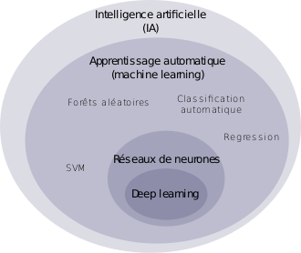

L'intelligence artificielle (IA) est « l'ensemble des théories et des techniques mises en œuvre en vue de réaliser des machines capables de simuler l'intelligence humaine. Elle correspond donc à un ensemble de concepts et de technologies plus qu'à une discipline autonome constituée. Souvent classée dans le groupe des sciences cognitives, elle fait a certains concepts tels que les réseaux neuronaux, à la logique mathématique et à l'informatique. Elle recherche des méthodes de résolution de problèmes à forte complexité logique ou algorithmique. Par extension elle désigne, dans le langage courant, les dispositifs imitant ou remplaçant l'homme dans certaines mises en œuvre de ses fonctions cognitives. La réalité semble encore tenir l'intelligence artificielle loin des performances du vivant ; ainsi, l'IA reste encore bien inférieure au chat dans toutes ses aptitudes naturelles.
Le terme « intelligence artificielle », créé par John McCarthy, est souvent abrégé par le sigle « IA » (ou « AI » en anglais, pour Artificial Intelligence). Il est défini par l’un de ses créateurs, Marvin Lee Minsky, comme « la construction de programmes informatiques qui s’adonnent à des tâches qui sont, pour l’instant, accomplies de façon plus satisfaisante par des êtres humains car elles demandent des processus mentaux de haut niveau tels que : l’apprentissage perceptuel, l’organisation de la mémoire et le raisonnement critique ». On y trouve donc le côté « artificiel » atteint par l'usage des ordinateurs ou de processus électroniques élaborés et le côté « intelligence » associé à son but d'imiter le comportement. Cette imitation peut se faire dans le raisonnement, par exemple dans les jeux ou la pratique des mathématiques, dans la compréhension des langues naturelles, dans la perception : visuelle (interprétation des images et des scènes), auditive (compréhension du langage parlé) ou par d'autres capteurs, dans la commande d'un robot dans un milieu inconnu ou hostile.
L'US Air Force demande l'aide de l'industrie pour développer une intelligence avancée de collecte d'information et avec la capacité de décision rapide pour aider les forces américaines pour attaquer ses ennemis rapidement à leurs points les plus vulnérables.Elle utilisera une intelligence artificielle, le raisonnement ontologique, et les procédures informatique basées sur la connaissance, ainsi que d'autres traitements de données avancés afin de frapper l'ennemi au meilleur point. D'autre part, d’ici 2020, plus de mille bombardiers et chasseurs F-22 et F-35 de dernière génération. commenceront à être équipés de sorte que, d’ici 2040, tous les avions de guerre américains soient pilotés par intelligence artificielle, en plus des 10 000 véhicules terrestres et des 7 000 dispositifs aériens commandés d'ores et déjà à distance
Watson, le superordinateur conçu par IBM, remporte deux des trois manches du jeu télévisé Jeopardy! en battant largement ses deux concurrents humains en gains cumulés. Pour cette IA, la performance a résidé dans le fait de répondre à des questions de culture générale (et non un domaine technique précis) dans des délais très courts.
Google ouvre un laboratoire de recherches dans les locaux de la NASA. Grâce à un super calculateur quantique conçu par D-Wave Systems et qui serait d'après cette société 11 000 fois plus performant qu'un ordinateur actuel (de 2013)46, ils espèrent ainsi faire progresser l'intelligence artificielle, notamment l'apprentissage automatique
Google ouvre un laboratoire de recherches dans les locaux de la NASA. Grâce à un super calculateur quantique conçu par D-Wave Systems et qui serait d'après cette société 11 000 fois plus performant qu'un ordinateur actuel (de 2013)46, ils espèrent ainsi faire progresser l'intelligence artificielle, notamment l'apprentissage automatique
Des modèles d'intelligence artificielle développés par Microsoft et Alibaba réussissent chacun de leur côté à battre les humains dans un test de lecture et de compréhension de l'université Stanford. Le traitement du langage naturel imite la compréhension humaine des mots et des phrases et permet maintenant aux modèles d'apprentissage automatique de traiter de grandes quantités d'informations avant de fournir des réponses précises aux questions qui leur sont posées
l'institut de recherche OpenAI annonce avoir créé un programme d’intelligence artificielle capable de générer des textes tellement réalistes que cette technologie pourrait être dangereuse. Si le logiciel est utilisé avec une intention malveillante, il peut générer facilement des fausses nouvelles très crédibles. Inquiet par l'utilisation qui pourrait en être faite, OpenAI préfère ne pas rendre public le code source du programme
Au fil du temps, certains langages de programmation se sont avérés plus commodes que d’autres pour écrire des applications d’intelligence artificielle. Aujourd'hui, ce sont Python et R qui fournissent les outils les plus riches dans ce domaine. Des plateformes comme TensorFlow et ses bibliothèques haut niveau ont démocratisé et accéléré le développement d'intelligences artificielles.

Il y a une confusion fréquente dans le débat public entre « intelligence artificielle », apprentissage automatique (machine learning) et apprentissage profond (deep learning). Pourtant, ces notions ne sont pas équivalentes, mais sont imbriquées :
Certaines banques font appel et développent des systèmes experts d'évaluation de risque lié à l'octroi d'un crédit (credit-scoring), notamment en utilisant ces systèmes pour la vérification des informations fournies, ou leur récupération et traitement de façon automatisée. Un exemple est le score FICO. Sont également développées des systèmes de trading algorithmique, où les gains de vitesses permis par l'automatisation par rapport à des traders humains peut faire la différence, en particulier grâce au trading à haute fréquence.
Le domaine militaire utilise des systèmes tels que les drones, les systèmes de commandement et d'aide à la décision.
La médecine a aussi vu de grands progrès grâce à l'utilisation de systèmes d'aide au diagnostic ou de diagnostic automatisé.En 2018, Google DeepMind, filiale de Google spécialisée dans la recherche avancée en intelligence artificielle, a publié les résultats d'une expérimentation d'intelligence artificielle pouvant détecter les maladies oculaires. Les résultats indiquent que l'IA le fait avec une marge d'erreur plus faible que les ophtalmologues117.La France crée en 2019 le Health Data Hub afin de simplifier et encadrer l'utilisation des données de santé118.Plusieurs systèmes intelligents ont pu être utilisés pour lutter contre la pandémie de Covid-19, notamment avec le superordinateur Fugaku 415-PFLOPS.
Un usage de l'IA se développe dans le domaine de la prévention des crimes et délits. La police britannique, par exemple, développe une IA de ce genre, annoncée comme pouvant être opérationnelle dès mars 2019119. Baptisée National Data Analytics Solution (Solution nationale d'analyse de données ou NDAS), elle repose sur l'IA et des statistiques et vise à estimer le risque qu'une personne commette un crime ou en soit elle-même victime, pour orienter les services sociaux et médicaux qui peuvent la conseiller
Le droit fait appel à l'IA dans la perspective de prédire les décisions de justice, d'aider à la décision et de trancher les cas simples. L'Estonie a par exemple développé une intelligence artificielle capable de prendre des décisions de justice sur des délits mineurs. Les États-Unis utilisent par ailleurs dans certaines juridictions le système COMPAS (en)(Correctional Offender Management profiling for Alternative Sanctions), un système d'aide de prise à la décision pour les juges
Le domaine de la logistique a vu certains projets utilisant de l'intelligence artificielle se développer notamment pour la gestion de la chaîne logistique (supply chain) ou des problématiques de livraison telle celle du dernier kilomètre. L'intelligence artificielle est également fortement utilisée dans le domaine des transports en commun, car elle permet de faciliter la régulation et la gestion du trafic au sein de réseaux de plus en plus complexes, comme le système UrbanLoop actuellement en cours d'étude dans la ville de Nancy. Certains projets comme Google Maps utilisent par exemple des systèmes d'IA en milieu urbain pour compenser la réflection du signal GPS sur les immeubles avoisinant, ou pour cartographier des zones où peu d'informations sont disponibles.Plusieurs entreprises ont par ailleurs annoncé avoir développé des programmes de recherche en voiture autonome, notamment Google à travers sa filiale Waymo, l'entreprise française Navya ou encore Tesla.
La robotique a recours à l’intelligence artificielle à plusieurs égards. Notamment pour la perception de l'environnement (objets et visages), l'apprentissage et l'intelligence artificielle développementale
L'intelligence artificielle est par exemple utilisée pour animer les personnages non-joueurs de jeux vidéo, qui sont conçus pour servir d'opposants, d'aides ou d'accompagnants lorsque des joueurs humains ne sont pas disponibles ou désirés. Différents niveaux de complexité sont développés.Le 24 janvier 2019, Google DeepMind présente sur son blog AlphaStar, une intelligence artificielle dédiée au jeu de stratégie en temps réel StarCraft II qui a affronté deux joueurs humains lors d'un match retransmis en direct sur Internet. Durant cet évènement, AlphaStar bat deux joueurs professionnels, dont Grzegorz « MaNa » Komincz, de l'équipe Team Liquid, l'un des meilleurs joueurs professionnels au monde. Le développement de cette intelligence artificielle a été permis par un partenariat entre Google DeepMind et Blizzard Entertainment, l'éditeur du jeu. En Poker, Le premier programme informatique à avoir gagné un tournoi de poker significatif face à des joueurs professionnels humains est Polaris, en 2007 et, depuis, les efforts pour améliorer ce résultat n'ont pas cessé.
La domesticité, avec des robots employé de maison ou pour certaines tâches précises comme en domotique.En programmation informatique, notamment pour la maintenance prédictive, l'autocomplétion ou l'aide au développement.En journalisme : des IA (appelées improprement « robots journalistes ») pourraient à terme aider les journalistes en les débarrassant de certaines tâches, notamment la veille, le bâtonnage de dépêches ou la vérification des fake news.La Corée du Sud propose la toute première animatrice télé virtuelle en novembre 2020 lors d'un JT.
En design : la conception assistée par ordinateur fait depuis longtemps appel à des algorithmes d'optimisation. En 2019, le créateur Philippe Starck lance ainsi une chaise développée en collaboration avec la société Autodesk, la « A.I.chair ».
Jusqu'à présent, l'intelligence artificielle n'est pas officiellement réglementée en Occident. Toutefois, tant les algorithmes que les données personnelles utilisées sont soumis aux règles du RGPD.Le 18 décembre 2018, le groupe d'expert de haut niveau sur l'intelligence artificielle de l'Union européenne publie un document contenant des lignes directrices en matière d'éthique de l'intelligence artificielle.
L’IA se construit à partir d’algorithmes qui reposent sur des formules mathématiques et exploitent des données. Les algorithmes posent quatre types de questions :